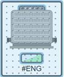
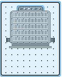
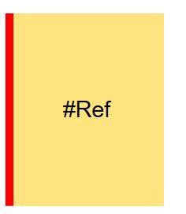

Graphics Editor Troubleshooting
This section provides general troubleshooting information about the Graphics Editor.
General Graphics Editor Error Messages
Message | Situation | Do the following… |
#ENG (Engineering Error) 
 NOTE: Symbol may look different. For example, no text element or background overlay, depending on how it was engineered.  | You have a graphic displayed in the Graphics Editor; a Symbol on the graphic displays this message. | The data point is not resolved because the object reference does not exist or the data point has been deleted. Check or do the following:
|
| In the Value Simulator view, a data point with an existing address has COV subscriptions. Instead of the data point’s status and value displaying, this message displays.
| The data point is inaccessible and not readable for COV subscriptions. |
| You have just restored a project and are unable to save existing graphics. | Check the database folder for shared permissions, and then ensure the files did not copy over as Read Only. If they did, change the permissions by unchecking the Read Only attributes of the files. |
Troubleshooting AutoCAD Fonts
AutoCAD files support two basic font types:
- SHX – Native fonts to AutoCAD
- TTF – Microsoft Windows system TrueType fonts
If you have imported an AutoCAD drawing into Desigo CC and some of the characters are not displaying correctly, it is likely the correct font files are not installed on the local computer. The following options are suggested to fix the problem:
- Contact the source that sent or created the original AutoCAD graphic, and request the missing font files, as they could be custom TTF or SHX fonts. Once you have the font files, you must download and install them.
- SHX fonts must be copied to the [Installation Drive]: > [Installation Folder] > GMSMainProject > bin folder.
- TTF fonts must be installed using Microsoft Windows. Right-click the .TTF file and select Install from the context menu.
- Consider downloading and installing the AutoDesk TrueView™ software, which comes pre-loaded with many common fonts.